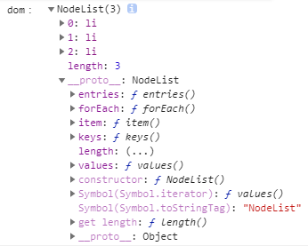
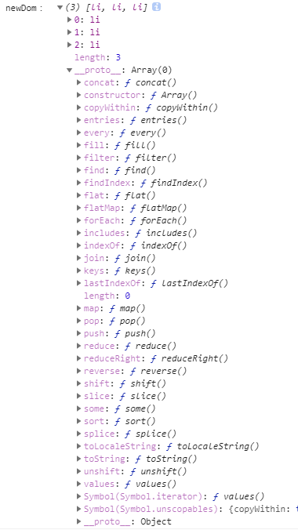
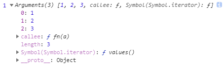
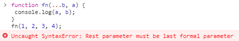

[JS] ES6 展開與其餘
ES6 的新特性 - 展開運算子 與 其餘運算子，雖然同樣是以 ... 來呈現，但使用上略有差異
一、展開運算子 (spread operator)
展開運算子有兩種功能，一是合併陣列，二是將類陣列轉成陣列型式
一般陣列
傳統上會使用 concat 方法來合併陣列
1 | const groupA = ['爸爸', '媽媽']; |
利用展開運算子合併陣列
展開運算子可以將陣列內的值，一個一個取出再合併
1 | const groupA = ['爸爸', '媽媽']; |
將展開運算子使用在物件上
展開運算子除了可以做陣列的串接外，也可以使用在物件上
1 | const methods = { |
利用展開運算子將類陣列轉成陣列
可以利用 展開運算子 將 類陣列 轉成 陣列 型式
1 | <ul> |
dom是類陣列

newDom為陣列 => 利用展開運算子將dom轉成陣列
※ 注意：
展開運算子只能淺層複製，只有第一層被複製，而第二層則還是傳參考型式
2
3
4
5
6
7
8
const groupB = [...groupA];
groupA[0].id = '001';
groupA[1] = '隔壁小王';
console.log(groupA); // [{id: 001}, "隔壁小王", "媽媽"]
console.log(groupB); // [{id: 001}, "爸爸", "媽媽"]
二、其餘運算子 (rest operator)
其餘運算子是收集其餘的值，傳成一個陣列，而在函式中可接受函式有不確定數量的參數，使之變成一個陣列
一般寫法
1 | function fn(a) { |
使用引數 ( arguments )
在 ES6 之前，常使用 arguments 取得傳入的引數，arguments 會接收所有傳入函式的值，利用 arguments 取出的並非陣列，而是類似陣列的物件。
1 | function fn(a) { |

使用其餘運算子
到了 ES6 新增了其餘運算子功能，當傳入不確定數量參數時，會視為一個陣列
1 | function fn(a, ...b) { |
※ 注意：
其餘運算子必須為函式的最後一個參數，若是放在其他參數前面，則會產生錯誤
2
3
4
console.log(a, b);
}
fn(1, 2, 3, 4); // 產生錯誤訊息

其餘運算子搭配解構
1 | function fn(a, ...[b, c]) { |